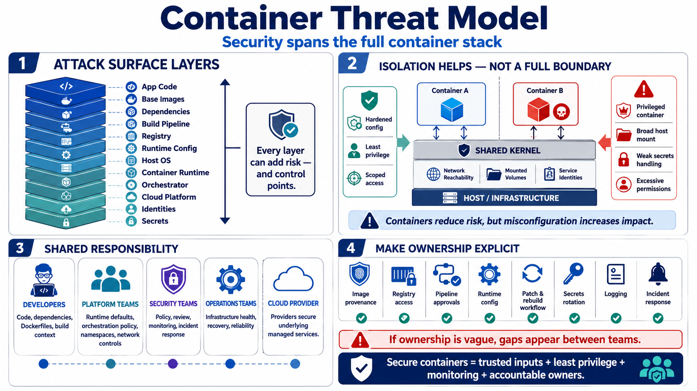

Container Threat Model and Shared Responsibility
Connecting to LMS... Progress: in progress

Narration
A container threat model starts with the application, but it does not end there. Application code, base images, dependencies, build systems, registries, runtime configuration, host operating systems, runtimes, orchestrators, cloud platforms, identities, service accounts, secrets, and environment variables all contribute to the attack surface. Each layer can introduce risk, and each layer can also provide useful control points.
Container isolation is useful, but it should not be treated as a complete security boundary. Containers commonly share the host kernel, may have network reachability to internal services, may mount volumes, and may run with identities that can access other systems. A hardened configuration can reduce risk, while a privileged container, broad host mount, weak secret handling, or excessive service account permission can greatly increase impact.
Shared responsibility is practical, not just contractual. Developers influence application code, dependency choices, Dockerfiles, build context, and whether secrets are accidentally included. Platform teams influence runtime defaults, orchestration policy, namespaces, network controls, and deployment patterns. Security teams help define policy, review risk, monitor behavior, and respond to incidents. Operations teams keep infrastructure healthy and recoverable. Cloud providers or hosting teams secure the underlying services they operate.
Good container security programs make responsibility explicit. Someone must own image provenance, registry access, pipeline approvals, runtime configuration, patch and rebuild workflows, secrets rotation, logging, and incident response. When ownership is vague, security gaps often appear between teams. The container may run successfully, but nobody is accountable for whether it was built from trusted inputs, deployed with least privilege, or monitored after release.